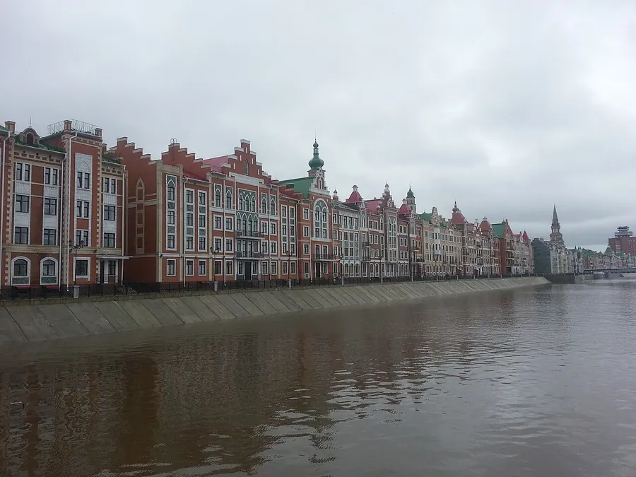
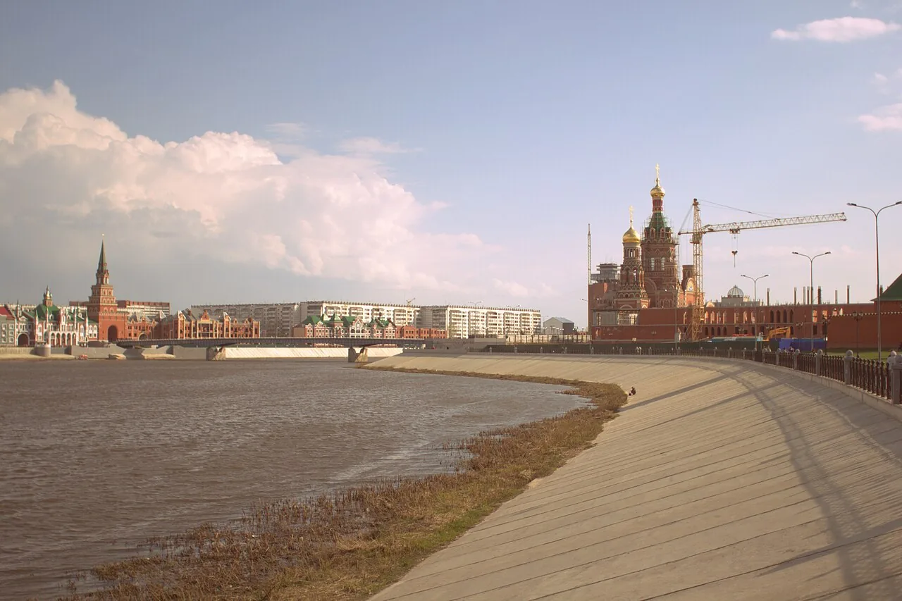
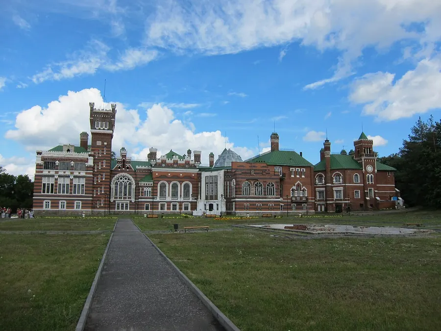
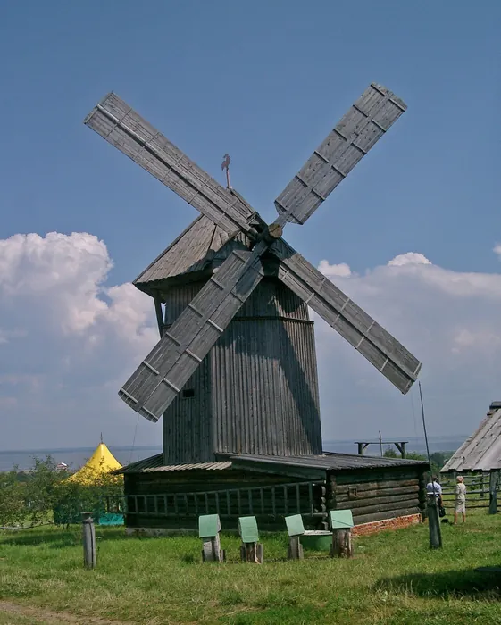
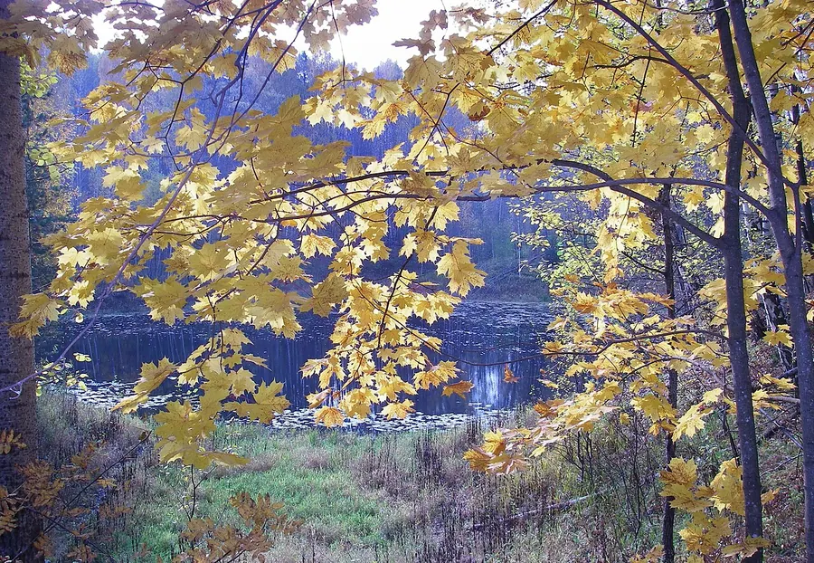

Набережная Брюгге
На берегу Малой Кокшаги выстроились разноцветные дома со ступенчатыми фронтонами. В оформлении фасадов использованы мотивы североевропейской архитектуры.
На берегах Средней Волги сосновые леса скрывают озёра, а в Йошкар-Оле нарядные фасады отражаются в Малой Кокшаге.

Марий Эл лежит по обе стороны Волги. На низком левобережье много лесов, озёр и болот, а часть правого берега занимает возвышенность. Йошкар-Ола расположена в глубине республики, на Малой Кокшаге.
Декретом ВЦИК и СНК РСФСР образована Марийская автономная область.
Краснококшайск получил название Йошкар-Ола.
Марийская автономная область преобразована в Марийскую АССР.
Закрепилось современное название — Республика Марий Эл.

На берегу Малой Кокшаги выстроились разноцветные дома со ступенчатыми фронтонами. В оформлении фасадов использованы мотивы североевропейской архитектуры.

В посёлке Юрино стоит усадьба с башнями, арками и парком. Её построили для семьи Шереметевых на берегу Волги.

Старинные избы, хозяйственные постройки и ветряная мельница под открытым небом знакомят с бытом горных мари.

Лесная территория с карстовыми озёрами и минеральными источниками. Среди известных мест — озеро Яльчик и Кленовая гора.
Через республику протекают Волга, Ветлуга, Большая и Малая Кокшага. Среди сосновых и смешанных лесов лежат озёра Яльчик, Кичиер и Мушан-Ер. Часть лесов охраняют национальный парк «Марий Чодра» и заповедник «Большая Кокшага».
Культуру мари можно узнать по вышитым рубахам, старинным мелодиям на марийских гуслях и празднику цветов Пеледыш пайрем, на котором поют и танцуют народные коллективы.
Подкоголи — вареники с мясом, творогом, картофелем или ягодами. Команмелна — многослойные блины, в старинных рецептах которых используют ржаное тесто и крупу.